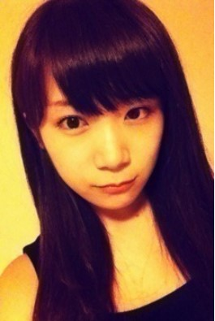
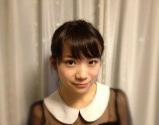

発表から1日
4thシングルの選抜メンバーの発表から1日が経ち、いろんな方の気持ちや意見もたくさんたくさん伝わってきました。
また改めて、いきなりこのポジションに立たせていただいていることがあらゆる人に迷惑をかけてしまったり悲しませてしまっているんだということもわかりました。
じゃあこの場にいる私はどうするべきなのか？と何回も何回も真剣に考えました。
私なんかがいつまでもクヨクヨしてる場合じゃないんです。
今はチャンスを与えていただいた。
だからメンバーや、メンバーのことを応援してくださっている方々の色々な気持ちを背負って、今の状況に決して甘えないで一生懸命全力で進んで行かなきゃいけないんです。
もらったチャンスは、チャンスのままにしておいちゃいけないと思うんです。
いただいたチャンスの中で一生懸命努力して、いつか自分の持っている力と結びついたとき、そのときがみなさんに認めていただける時なんじゃないかなと感じています。
なので今は賛否両論すべてを受け止めて、一歩一歩前に進みながら一生懸命取り組んでいこうと思います。
最後にたくさんのコメントをくださった方々、ありがとうございました(/ _ ; )
応援してる！とかこれから頑張ってね！って言ってもらえたことがすごく嬉しくて元気がでました。
これから私は乃木坂46で頑張って行きます。
今日からは元気いっぱいの
ブログを更新していきますよ～(*^o^*)
私がどんな人なのか
知っていただきたいので
いろいろ書きますねっ(*^^*)
まずは名前！
秋元真夏 あきもとまなつ
です♪
名前の通り、誕生日は夏で
埼玉県出身の8月20日生まれです☆
今年19歳になりました(*^o^*)
え！19歳なの？！見えない。。
という声が聞こえてきそうです（笑）
呼び方は、まなつとか
まなったんって呼んでもらえたら
嬉しいですっ(｡･ω･)ﾉﾞ
それから～...性格！
私は、初対面の人とでも
話せるから一人見知りではないけれど
慣れるのに結構時間が
かかっちゃうタイプです。
だから何回も会っていないと
なかなか素を出せなかったり、
冗談言い合ったりできなかったり
してしまいます(´･_･`)
これは私の直したいところでも
あるんですよ(ToT)
それと私は内容に関わらず
人の話を聞くのがすごく好きです♪
どんなことでもその人が
楽しそうに話していれば私も楽しい♡
その反対に自分から話すのは
少し苦手です...(･･;)
あと、私見た目とは裏腹に
意外と粘り強くて我慢強いんですよ～っ！
また、高校生の頃は
生徒会長を務めたりもしていました。
この経験はたくさんの人を
まとめることの大変さや、
やり遂げた時の達成感などを
学べてすごく良い経験に
なったなぁと思っています☆
でも私は緊張しやすかったから
何をするにも焦ってしまったけど...（笑）
うーん。。バラバラになってますが、私のことを少し書いてみました♪
それから、ブログのコメントも
全部読ませてもらいました(^^)
本当にありがとうございます。
とてもたくさんの応援コメントを
くださって、改めて乃木坂46の
ファンの方の優しいなぁと
感じました(^^*)♡
じゃあ最後に初の写メを
載せて見たいと思います(｡･ω･)ﾉﾞ♡
ほいっ

.........。
自撮りはやっぱり難しいし まだ恥ずかしいですなぁ///
こんにちは！
まなったんです
昨日は私の自己紹介を
少しして、自分から話すのが
苦手って書きましたが
これから握手会でみなさんに
会ったときに話せるように
練習しておきますっ(*^^*)
でも案外喋れる気もする...♡
もし私と同じようにあんまり
自分から話すのが得意じゃ
ない方でもお試しでもいいので
来ていただけたら嬉しいです∩^ω^∩
それから私もみなさんのこと
これからたくさん知って
いきたいです♡♡
そうそう！
昨日は飛鳥に握手会って
どんな感じなの？♡とか
緊張するのかなぁ？とか
聞いたりしましたよ(｡･ω･)ﾉﾞ☆
年下だけど握手会の先輩だから
参考になります(((っ･ω･)っ
飛鳥はすっごく小柄で
最年少なのにダンス踊ってる姿が
かっこいい～(*^o^*)
って私がこんなこと
言わなくてもみなさんの方が
よく知ってるか！！
細いなぁ！とか 顔ちっちゃい！
とか言ったりすると
なにいってんのよ～☆
て照れながら言ってきて
妹みたいでかわいい(^^)
今度いっしょに写真
撮って載せよっと♪♪
じゃあ今日は髪型が
ちょっと違う写メを！

次は質問返ししたいと思います♪
ここぞとばかりに
何かあれば聞いちゃってください！
もちろんいままでのコメントに
書いてもらった質問にも答えます(^-^)/
最後に！公式HPの写真が私のも
走れ！Bicycleの衣装に変わったので
ぜひ見てみてください(*^o^*)♡